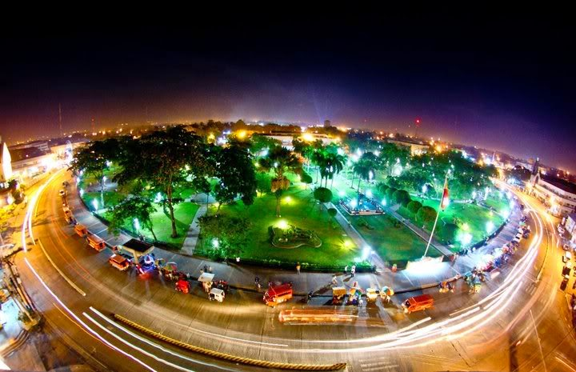

Gensan
The First time that i went to somewhere far away from where i experience is gensan.
The scent of dalandan taht permeated the entire bus was nostalgic.
I was in high school i visited my mother's home before she had me;
It was fun getting to know my relatives, grandparents, aunts and my half siblings.
I went for a walk down the street and to a huge city with my mom to explore her favotite spot,
and it was great to watch mom meet her mother and siblings, as well as her son and daughters.